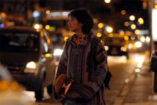

|
SOMOS NOSOTROS
Mariano Blanco | Argentinien 2010 | 72 min.
Material: HDV
Format: DigiBeta
Original language: Spanish
Camera: Ian Feld
Editing: Mariano Blanco
Sound: Sophie Wolff, Victoria Pereda, Carlos Moguer and others
With Mariano Soria, Ayelén Galatti, Tomas Scicchitano, Margaux Cauchy, Mariano Blanco
Production: Mariano Blanco
Print/Sales: Mariano Blanco
Special Jury Award, Gallo Verde, Buenos Aires 2010
German Premiere
It all starts with the sunset in an out-of-season Mar del Plata with no summer tourists or neon lights. The city is opaque and almost deserted, except for a group of friends who are no more than twenty years old and just let time pass by as they skate around, hang out with their girlfriends, or actually try to find one. The title reaffirms a generational will: It’s us. That "it’s us" doesn’t stress anything –the way old Argentine cinema did, back when it would have entitled a film like this as "This is us". Instead, it shows. And what it shows is a deserted and rustic city through splendidly developed sequence shots that let time flow without searching for any transcendence, just trying to give a poetic lightness to that faint and sad portrait of characters who have the same insolent youth as director Mariano Blanco, a film student who dared to tell the story of the group he belongs to, including himself as one of the actors. Somos nosotros shows, yet again, that it is desire what makes cinema possible. – BAFICI, Buenos Aires
Mariano Blanco, born in 1989 in Buenos Aires. He studies film director at the Universidad del Cine of Buenos Aires. Somos nosotros is his first film.
Films: 2010 Somos nosotros
back
|